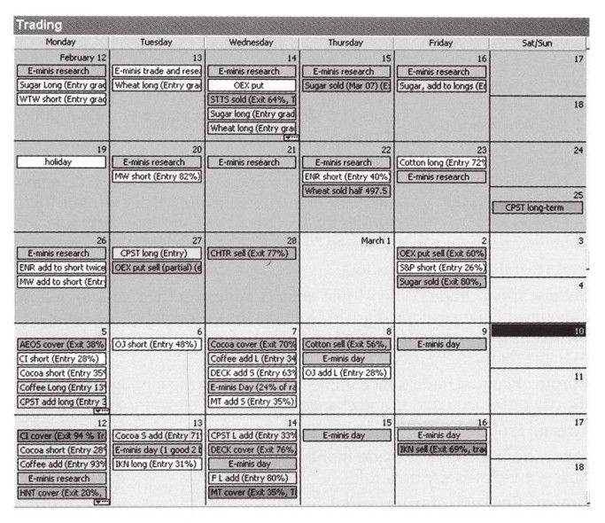
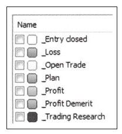
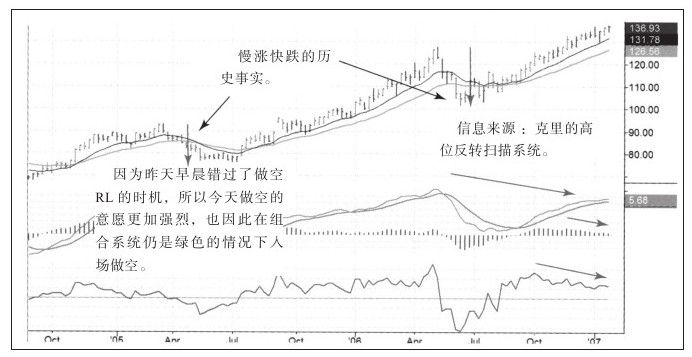
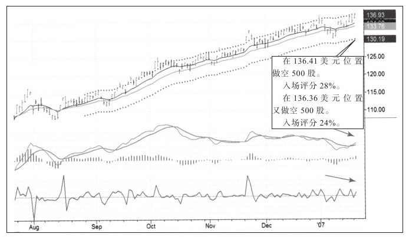

犯错可以，但不要重复犯错，喜欢探索和学习的人经常会犯错。我在用人时会鼓励他们犯错，这是他们工作职责的一部分。犯错是探索和学习的表现，重复犯错却是粗心或者其他心理问题的标志。
持续做好交易日记是从错误中学习的最好方法，它会让你把赚钱的喜悦和亏钱的苦楚都放入可以追溯的文件中。我的交易日记采用画报形式，有图表、有文字。图表中用带有箭头、线和点评记录入场和出场时的情况。为了让日记总是在最新状态，我通常在早饭之前完成前一天的交易日记。开盘前做完计划，我将开始崭新的一天。
除了非常活跃的日内交易外，记录每一次交易非常重要。如果你每天有多次交易，也该在每三四次交易后就做一次记录。
把画报形式的交易日记转为电子表格。
你可能会把关心的人或事用照相机记录下来，在你的钱包或办公桌上会有你爱人、女友、丈夫、孩子、宠物、房子或者汽车的照片。我也希望你把交易拍下来，这样你会比以往更了解它们。
我喜欢用Snagit来制作图表和记录，它可以从行情软件中抓图，也可以画线和写文字。我把完成后的图表粘贴到我的交易日记中。我几乎每天都在用它更新日记或者和朋友们分享交易想法，我们用电子邮件的时候，都喜欢发送截图。
我做交易记录的软件是微软Outlook，这是个功能非常强大的软件，而不仅仅只是个邮件工具。
用Outlook中的日历功能，创建一个新日历，命名为交易。你可以随时查看一天、一周或一月的日历。我喜欢月历格式，这种格式有一个可以随意打开或关闭的目录（见图3-2）。
和交易圈的两个朋友克里·劳文、杰夫·帕克一起，我们也特别为持续做好交易日记创建了一个Outlook，我们把它命名为AK-47。起初我们是为自己做的，现在我们共享了这个Outlook，你可以在我的网站上找到对它的描述。

当点击日历创建一个新交易记录时，你可以对这个记录进行标记。如果用不同颜色表示交易的不同状态，月总结时，看这些颜色就会显得非常方便（见图3-3）。[1]

大多数时候，我会在日记中插入日线图和周线图，必要的时候也可能加上月线图或者盘中的走势图，如图3-4和图3-5所示。
图3-4是DB的周线图，交易信息是朋友分享给我的，斜箭头线表示顶背离，垂直箭头线预示股价可能快速下跌。
日记中还有一部分用来提醒自己一定要等待合适的时机再出手。因为非常看空股票市场，所以生怕自己错过了好的入场点，但还应该更有耐心，等待合适机会。

从图3-5中可以看到一次看空的顶背离和向上假突破（非常重要的交易信号）。日记记录了我的入场情况，并以百分比的形式对两个出场指令的质量做了评价。当图表摆在我面前，我就能把先前交易经历回想起来，曾经做什么是对的、做什么是错的，以及如何提高我的入场能力。

在进入下一章之前，你想看看这次做空DB股票的交易结果吗？你们已经看到了我的入场，但如果我告诉你我忘记是如何出场的，那会怎么样？如果我告诉你DB下跌而我却提早平仓，又会怎么样？这些都没有太大的意义，有意义的事情是让你明白如何做交易日记。
[1]本书英文版为彩色印刷，故有颜色显示。因中文版为单色印刷，无法显示不同的颜色，如果读者想查阅彩色图，请参照本书附带的光盘。